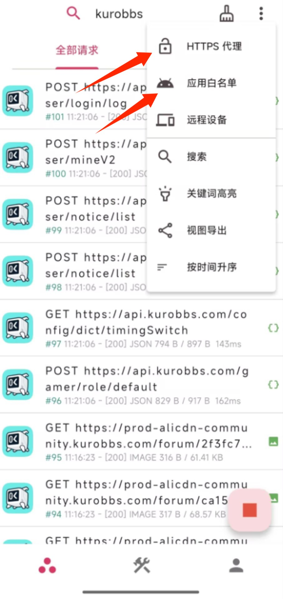
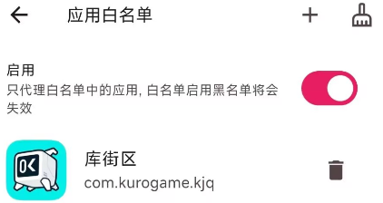
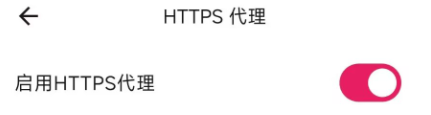
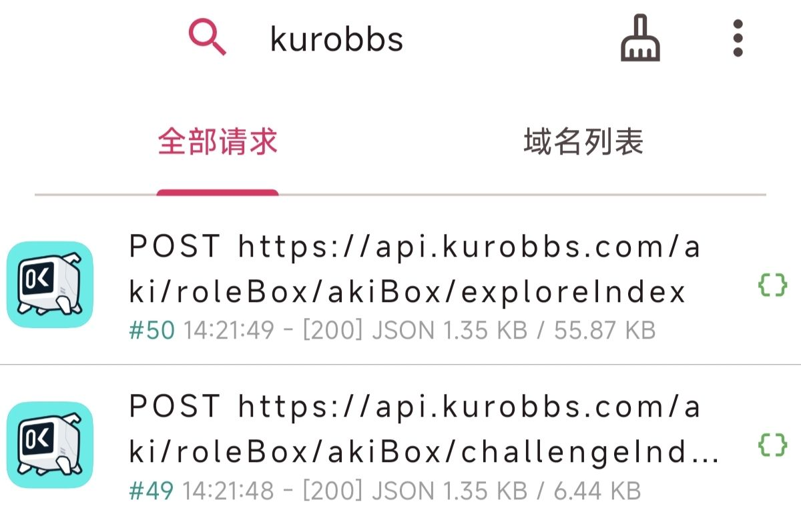
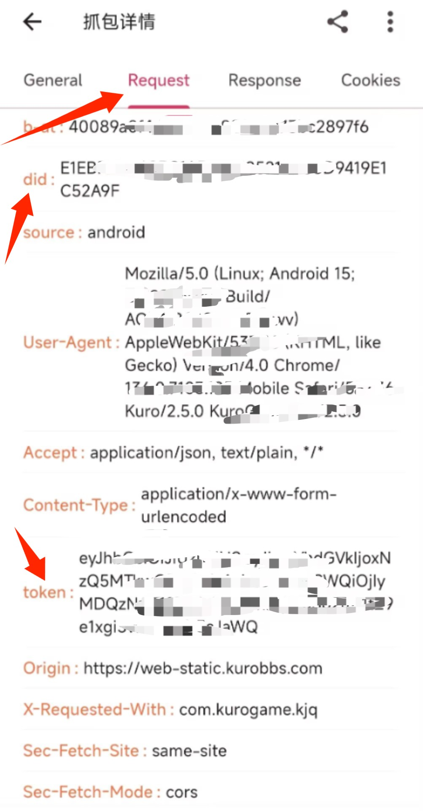
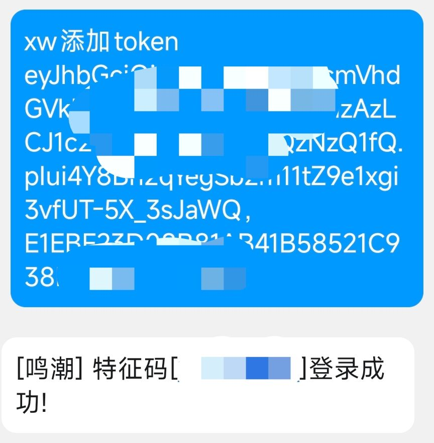

如果已有token和did（从其他bot获取）参见最后一步
如果会使用github：Releases · wanghongenpin/proxypin
苹果用户：https://apps.apple.com/app/proxypin/id6450932949
安卓用户：https://xn--ntsp09fr3m.com/ProxyPin-android.apk




did字段和token字段大致格式如图。did有时可能存在devCode字段中。


原先网页版库街区和h5方式共享token，可能是kl在某一时期具有开发官方h5小程序的计划，用户可以抓取网页token进行查询（原来的ww登录方式）。现kl关闭该接口，故只能使用库街区app的凭据进行查询，这也是一般用户游戏外能够看到角色面板的唯一方式。登录只允许存在一处，但通过抓包可以从app中提取凭据实现同时登录。
理论上一次token登录可以坚持到换手机。